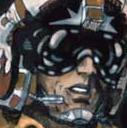

Forums galactiques > Assemblée Galactique : diplomatie officielle > Greg
Pages : 1 2
Seigneur_Bodet 07/07 ETU 16:38 | Il est vraiment degeulasse Greg : - Il s'enrichit comme un escroc sur le dos des autres avec son impot galactique . - Il m a pouse a attaque des grands commandants tels que Fedayn, FlyingBull, dark, agarah, primarque . - A cause de lui j ai attaque des petits commandant car il me prenait mes planetes alors qu on etait cense etre en traite . - Il ne veut que le POUVOIR et bien il aura du SANG ! Même si je dois mourir je me batterai jusqu au bout ! |
| Elamdor de Noriantis  07/07 ETU 16:43 | En tant que petits commandants que tu as attaqué, j'aimerais bien que tu me rendes ma planète !!!! |
Seigneur_Bodet07/07 ETU 16:48 | Et ben ta qu a ta prendre a greg ! Car c est a cause de lui tout sa ! Pendant tout ce temps il m attaquait petit a petit en me disant :oh j ai pas fait expres, je vais te rendre tes planetes ! et il l a jamais fait ! alors j attaquai des petits commandant pour reprendre les plnetes qui me prenait mais ce lascar etait en fait un traitre ! donc voyez tout sa avec lui ! |
Greg 07/07 ETU 16:56 | Vous mentez Bodet. Je ne vous incite à attaquer personne. Au contraire, je vosu reproche d'attaquer n'importe qui, et de jouer n'importe comment. Hahaha vous me faites rire Bodet, vous prenez à témoins l'assemblée de nos querelles, car vous êtes moribond, si ce n'est déjà mort. Vous essayez de rallier des gens à vous, ou de les retourner contre moi, mais ces gens savent que VOUS attaquez les gens sans raisons, et ils savent que je suis juste, et que vous n'êtes qu'un menteur. Quand je pense aux nombre de jeunes commandants que vous avez éliminé sans sommation, et uniquement avec des kamikazes, je suis persuadé qu'il n'y aura personne pour vous soutenir. Enfin, Bodet, sache que je me souviendrai de ton accusation sur ma volonté de "m'enrichir grâce à l'impôt. Sache que cette fois ci, je ne gèrerai plus le budget galactique, et ce seront 3 joueurs qui le gèreront. ET CROIS MOI : GRACE AUX PLANETES QUE JE ME SUIS FAIT SUR TON DOS, JE N'AI VRAIMENT PAS BESOIN DE DETOURNER UN CENTIME DU BUDGET GALACTIQUE. WAHAHAHAHAHAHAHA Seigneur_Bodet, même si tu chiales toutes les larmes de ton corps et que tu te prosterne à mes genoux, le souvenir de tes méfaits sur les nouveaux joueurs (tu es responsable d'à peu près 80% des joueurs qui ont abandonnés) fera que malgré toute la pitié que tu pourras me causer, je n'aurais pas detristesse dans ton élimination complète. |
Greg07/07 ETU 17:00 | Quant à ton argument minable de "ouiiin, c'est dégueulasse, Greg m'attaque donc je dois attaquer des petits joueurs, ouiiin" il me donne encore plus envie de t'achever à la hache, comme un animal malade |
sayyadina corp 07/07 ETU 17:00 | Je ne comprend rien du tout !! Pourquoi n'avoir pas envahi les planètes du Cdt Greg ? Au lieu de ça vous avez choisi la solution de facilité, à savoir attaquer des "petits" commandants (je n'aime pas le terme de "petit" mais bon...) |
Fidel Castro 07/07 ETU 17:05 | Mon cher Bodet, vous etes enervé de perdre des planetes, mais c'est planete vous les avez eu grace a votre enrichissement du à vos multi comptes, sans eux vous ne serez pas à ce niveau, vous seriez sans doute un bon commandant mais pas un tres bon! Quand à ceux qui esperent recevoir des planetes de la part de Bodet vous pouvez toujours rever, meme à son apogé il ne voulait pas en donner! |
Greg07/07 ETU 17:08 | Le boucher se met à chialer, c'est d'un pathétique... |
primarque 07/07 ETU 17:21 | Je n'ai pas confiance en vos accusations Bodet, mais je doute, come l'hommequ je suis. Greg, pouvez vous jurer sur l'honneur ne pas avoir inciter Bodet à m'attaquer moi ou un autre? |
Greg07/07 ETU 17:23 | Je n'ai JAMAIS demandé à Bodet de vous attaquer. |
Le Sigillite 07/07 ETU 18:14 | Pour ma part je prend a temoin aujourd'hui l'assemblé: Hawklord a abandonné car un different entre lui et greg lui a fait predre 4 planetes. Il m'a donner les autres que j'ai redistribué dans les gens de ma coalition pour que tous puisse en jouir. Greg votre different est réglé maintenant pouvons nous compter sur l'arret des attaques et à la restitution (si possible) des 4 planetes prise au seigneur Hawklord pour les donner au commendant Nufeel qui ne possede qu'une seule planete? Merci. Je compte sur votre sagesse a tous pour cesser les attaques inutiles. |
Obiwan Kénobi 07/07 ETU 18:16 | Je confirme que greg n'a jamais fait une telle chose, c'est totalement hors de propos! Jamais il ne s'abaisserait à pareille tâche. |
etic 07/07 ETU 18:31 | C'est clair, je ne connaissais même pas vous et lui avant de recevoir une bomb HA de Hawklord, le petit Cdt qui un jour sorti de ché lui a prit dieu comme témoin que le ciel qui lui était tombé sur la tête n'aurait pas du être sa destiné.... Il ne sait jamais posé la question que Apocalysis pouvait tourner sans devoir faire attention à un Cdt Casper qui un jour avait décider de découvrir le monde!!!! Etic |
Seigneur_Bodet07/07 ETU 18:52 | lol le chien galeux oue ! il ma dit va si atatque primarquie cette nuit moi je me charge de flingbull allez personne me croira car je suis deja wanted a 100 % me n empeche que tu de te fous bien de la geule des gens Greg , allez va te faire enculer moi je te dis ! |
Agarash 07/07 ETU 18:55 | seigneur _bodet nous somme dans une assembler si vous voulez insulter gerg aller donc dans la salle special crachat dans la taverne , mais pas de sa dasn l'assemblée |
dark 07/07 ETU 18:58 | En effet, pour vous peut etre que Greg a commis des crimes! Peut etre que c'est vrai, peut etre que c'est faux! Mais vous n'avez en aucun cas le droit de l'insulter comme ca a tout va dans cette Assemblée, devant tout le monde! Et s'il-vous-plait, Seigneur_Bodet et beaucoup d'autres commandants, ESSAYEZ D'ECRIRE LISIBLEMENT! Et avec le moins de fautes de frappes et d'ortographes possibles! |
primarque07/07 ETU 20:15 | Je soutien Dark dans les propos de son message! Et je fait confiance à Greg, même si je sais que, comme tout homme, il n'est pas toujours un saint.. Que celui qui n'à jamais fauté lui jette la premiére pierre! |
Le Sigillite07/07 ETU 20:39 | Je viens de recevoir un communiquer de Greg qui a confirmer l'arret des hostilité et même a proposé son soutiens a notre jeune coalition! Je pense qu'il me parait un homme droit! |
Kyo 08/07 ETU 02:07 | "- A cause de lui j ai attaque des petits commandant car il me prenait mes planetes alors qu on etait cense etre en traite . " Lache. tu as détruit quasiment tous les commandants ( pacifique de surcroit ) de mon systeme originel, sache que je n'aurai de répit que quand tu sera totalement annihilé. |
Crimson08/07 ETU 02:52 | Un commandant s'approchat du bord de son estrade, dans, il était jeune mais on pouvait voir sur son visage les marques d'un vieillissement prématuré. `Bonjour commandants et commandantes honorables` Dit il, s'adressant a l'assemblée, puis, se tournant vers Bodet:`bonjour Bodet. Je fait partie des jeunes commandants pacifistes que Kyo a mentionné précedement. J'ai perdu la moitié de mes planètes dans votre guerre stupide contre Greg. Si vous croyez que c'est ainsi que l'on fait la guerre alors vous méritez la défaite car vous ne faisez pas la différence entre vos ennemis et les innocents. Je n'ai jamais attaqué personne et je n'ai jamais aquis quoi que ce soit autrement que par la diplomacie et je n'ai rien fait de mal a personne: Moi je peut dénoncer ceux qui agissent mal. Moi je peut dire que vous êtes un monstre! Vous vous servez de vos malheur pour justifier la mort des autres et vous attaquez de pauvres commandants qui n'ont rien a voir avec Greg dans le but de le vaincre: tomber si bas vous empêchera toujours de paraître mieux que Greg et meme d'une défaite contre vous il ressortira toujours auréolé de gloire. Il y a des choses qu'un homme d'honneur ne peut sacrifier surt l'hotel de la victoire, vous ne pouvez plus prétendre a ce titre. Même si un jour vous me prenez tout je viendrai toujours m'assoir ici et prendre la parole contre vous tant qu'il y aura de la force dans mes os et tant que la vie coulera dans mes veines. Je ne ferai rien pour hâter votre mort car la guerre ne fait pas partie de mes méthodes mais sachez que je ne la souhaite que plus ardament! Rendez leurs planètes à ceux que vous attaquez lachement et vous mériterez peut-être que l'on considère vos paroles lorsque vous dénoncez quelqu'un.` |
Pages : 1 2
Forums galactiques > Assemblée Galactique : diplomatie officielle > Greg